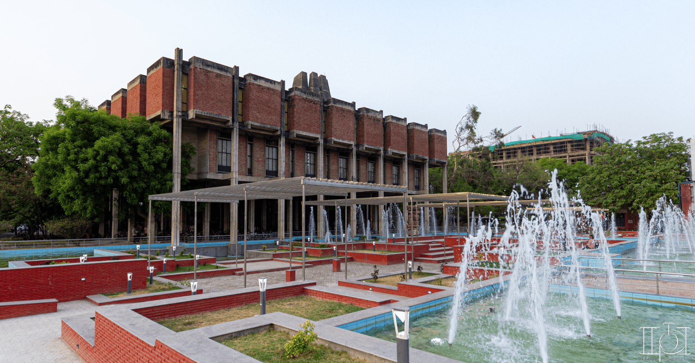

IIT Kanpur
I really got goosebumps when I saw the entrance for the first time!
Open Air Theatre (OAT)
The ultimate place for fun and entertainment.

PK Kelkar Library
The campus library, named after the founding director.